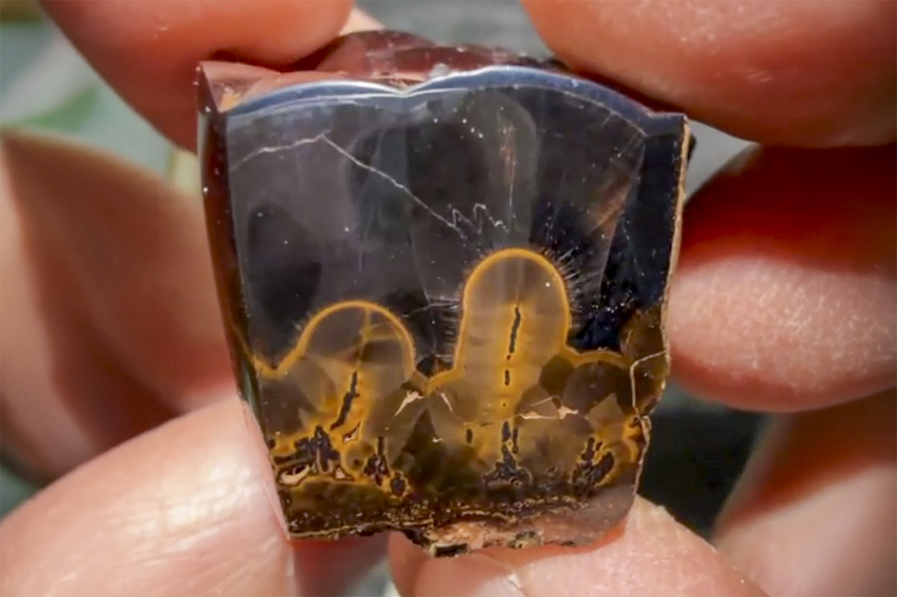

Goethite
"Polished Goethite"
IV-10369
Bursum Mine, Socorro County, New Mexico, USA
Purchased 5/9/2026 from MinCollect for $72.76
Core Collection • In Collection
Details
Storage Type: Flat
Storage Location: 000 None
Size class: Miniature (0)
Dimensions: 3.4 × 2.9 × 2.4 cm
Mass: 62.91 g
Luster: Average, Polished